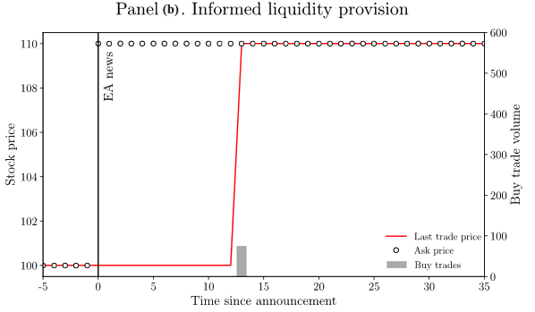
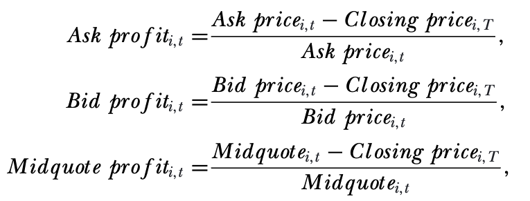
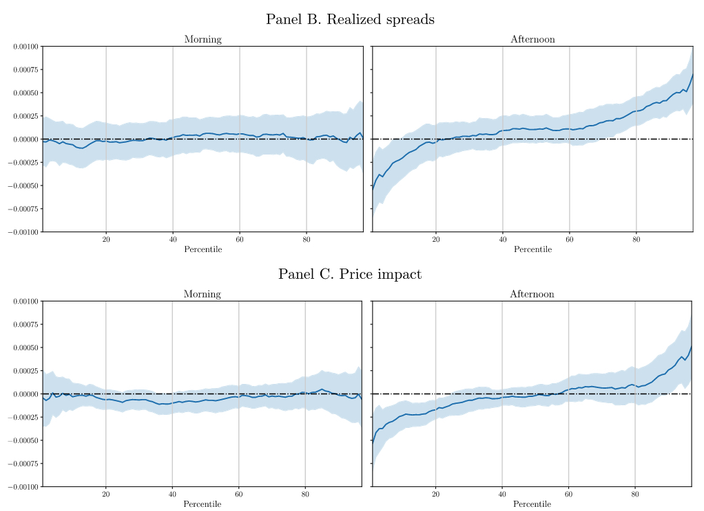
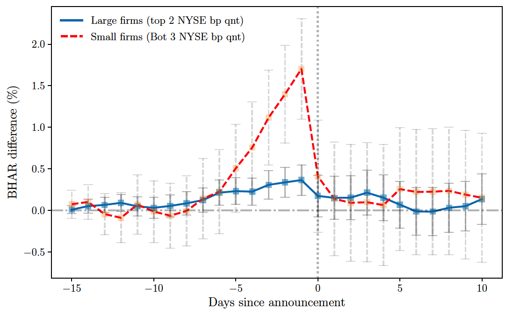

Lecture 2:
Event Studies
PhD course in Empirical Asset Pricing
Market efficiency
How and how fast is news about fundamentals incorporated into asset prices?
A classical question in finance.
Under Semi-strong- and strong-form market efficiency, prices reflect news (public or private) immediately.
Empirical research on this question goes back to the 1930s.
Measuring the impact of news
\begin{equation*}
Ret_{t\rightarrow T} = \alpha+\beta News_t + \varepsilon_t
\end{equation*}
News: public and private “quantifiable” news (both hard and soft).
\beta: measures impact on return on date t and also over a long-window (t\rightarrow T) post announcemment.
\alpha: captures the announcement premium.
Public news: Stock splits
Dolley (1933) examined is the first study to examine how news impact asset prices.
- Essentially, the author shows that for most stocks, their price went up on the announcement of splits.
- He examined only the day of the event (close to close).
- Main Issue: he didn’t take into account confounding events.
Public news: Stock splits
15 years after Dolley (1933), another event study on splits by Bacay and Myers (1948).
- Criticize Dolley for examining only one trading day.
- It is important to see what happens before the annoucement to see if there are some trying to reap profits from the news.
- It is also important to see what happens after the news if there is slow price adjustment.
- Must adjust the stock returns for market price movement. Maybe the first paper to talk about abnormal returns?
Public news: Stock splits
Barker (1956, 1958) also studies stock splits. Stock splits were very popular in the 1950s.
- Past studies could not answer why stock splits were associated with positive stock returns.
- Barker was the first to remove the influence of dividends and examine the implications of stock market cycles.
Public news: Stock splits
Ashley (1962) examined price changes to earnings news and dividends using statistical analysis.
- When prices react to news, statistically different from zero?
Classic event study … Fama, Fisher, Jensen, and Roll (1969).
- First to examine the speed of adjustments of prices to new information. I.e., test semi-strong efficiency.
- Mandelbrot and Samuelson find that returns behave like a random-walk (weak-form).
- They also construct abnormal returns from a CAPM model.
Fama, Fisher, Jensen, and Roll (1969)

“Market’s judgments concerning the information implications of a split are fully reflected by the end of the split month but most probably almost immediately after the announcement date.” \Rightarrow semi-strong.
How do you compute abnormal returns?
\begin{align*}
\text{Cumulative Abnormal Returns (CAR)} &= \sum_{t=T_1}^{T_2} (r_t - r_t^b) \\
\text{Buy-and-Hold Abnormal Returns (BHAR)} &= \prod_{t=T_1}^{T_2} (1 + r_t) - \prod_{t=T_1}^{T_2} (1 + r_t^b)
\end{align*}
CAR are easier to compute but ignores compounding effects. BHAR is more suited for long window studies.
What should be the benchmark return r^b?
- Constant mean return model.
- Market model.
- Factor models.
- There are limited gains in using more complex models like factor models because the marginal explanatory power of additional factors on top of the market model is small. The variance reduction in abnormal return is the greatest in cases where the sample of firms has a common characteristic (mackinlay1997event?).
- Characteristic-based benchmark returns (bessembinder2019characteristic?)
Earnings announcements
Ball and Brown (1968) examine price formation to earnings.
- Construct a measure of abnormal annual earnings (from an OLS of earnings on industry earnings). First to come up with positive and negative unexpected news
- Also, use abnormal stock returns.
- Provided evidence against semi-strong market efficiency.
Ball and Brown (1968)

Also, see table 5 in their paper
Post-earnings announcement drifts (PEAD)
Key PEAD papers: Foster, Olsen, and Shevlin (1984) and Bernard and Thomas (1989).
- Foster et al. replicate the findings of Ball (1969) but for quarterly earnings.
- Bernard and Thomas attempted to discriminate between two alternative explanations for post-earnings-announcement drift: a failure to adjust abnormal returns fully for risk and a delay in response to earnings reports. Findings line with “delay.”
Foster, Olsen, and Shevlin (1984)

Bernard and Thomas (1989)

Pattel and Wolfson (1983)
Pattell and Wolfson (1983) were the first to examine price discovery using intraday data around earnings announcements.
- A JFE paper commonly disregarded in the literature.
- They examine how volatility changes around earnings announcements.
- How long profitable strategy last… just a few minutes!
Why is news slow to incorporate prices?
- Limits to arbitrage (DeLong et al., 1990a, 1990b, Shleifer and Vishny, 1997).
- Illiquidity (e.g., transaction costs).
- Lack of investor attention.
Led to an explosion in the number of papers forming long-short portfolios following firm-news.
Mechanism of price discovery
What mechanism of price formation do you think these papers have in mind to explain such slow price discovery?
- Prices incorporate news through the arrival of trades as in Glosten and Milgrom (1985) and Kyle (1985). These models, however, deal with private information.
- Side note … \text{Kyle-}\lambda = \frac{\Delta P}{Q}.
- Kim and Verrecchia (1994) explain price formation around earnings announcements. Despite the news to be public, they assume that price discovery occurs through trades because liquidity providers cannot process public news.
- But is this really true? Let me show you an example that could, in part, contradict this view.
Fleming and Remolona (1999)

Side note: News impact on returns and volatility (volume)
What’s the difference? See Kandal and Pearson (1995).
- Volatility/volume reflects disagreement.
- Shock of news to volatility and volume might persist but not returns.
Price discovery of macro news
Andersen, Bollerslev, Diebold, and Vega (2003).
- Do macro news matter for explaining changes in currency rates?
- Past papers fail to provide a link.
- ABDV (2003), however, say “wait, use intraday prices, not daily prices!” Why? Because maybe price discovery happens quickly!
- How quickly does macro news (e.g., unemployment rate using analyst forecast) get reflected in asset prices?
ABDV (2003)
Regression: Ret_t = \alpha+\beta Surp_t + \varepsilon_t
Surp: is a measure of unexpected macro news. Ret_t: corresponds to 5-min FX returns.

ABDV (2003)
Asymmetric price reaction

Other important macro news papers
Not all papers are about price discovery but aim to understand the relationship between news and asset prices.
Bernankee and Kuttner (2005) find that unanticipated 25-basis-point cut in the Federal funds rate target is associated with about a 1% increase in broad stock indexes.
Boyd, Hu, and Jagannathan (2005) explore the sensitivity of security returns to unemployment surprises and find a positive stock market response to news of rising unemployment during economic expansions (a positive \beta) and a negative response during contractions (a negative \beta).
During the PhD…
Late in the PhD I was becoming more and more confused with the gap between what we know about PEAD and price discovery of macro news.
- Can the heterogeneity in assets (i.e., large and small firms vs liquid assets like FX) explain such difference?
- How does price discovery actually work? I.e., the mechanism.
RIP PEAD
Markets have become more efficient at processing earnings news.
RIP PEAD
Markets have become more efficient at processing earnings news.
- How you measure earnings surprise matter. E.g., analyst surprise vs random-walk surprises.
- Influence the stock composition in your sample. Random-walk increase significantly the number of micro cap stocks.
- One can still provide evidence of PEAD by choosing random-walk surprises over a long sample.
Mechanism to price discovery
If price discovery occurs all on announcement day, does trading plays a role?
- Liquidity providers are now most likely HFT; known to quickly process news.
- Recent theoretical models of price formation departs from Kyle (1985) and argue that price discovery occurs through quotes, e.g., Hoffmann (2014).
- Serious implications for empirical studies examining intraday price discovery.
- Issue for studies examining intraday price discovery is that news occur outside regular trading hours.
Simple illustration of the price discovery mechanism

Simple illustration of the price discovery mechanism

How is earnings news transmitted to stock prices? My study with Vincent Gregoire.

How to examine cross-sectional price discovery using bid and ask prices?
Because spreads narrow after news events, you can’t compute returns for ask and bids the way you do with midquotes.

How is earnings news transmitted to stock prices?

Liquidity providers’ profits


- Minutes since announcement: Since anlayst coverage announcement.
Around analyst recommendations

Quick recap
- Prices incorporate firm and macro news quickly.
- The mechanism: through adjustment in quotes and not through the arrival of trades.
- Caveat: so far, most studies focus on hard and not soft news.
- Type of soft news: Sentiment from press releases, conference calls, etc.
Other techniques to measure price discovery
What if you can’t quantify a news event?
Solution: Use unbiasedness regressions. - Measures informational efficiency and price informativeness. - Caveat: Must assume as when news is reflected in prices.
How does the arrival of private information impact prices?
- In Kyle (1985), a trader in posession of private information wants to minimize price impact and thus trade when there is more noise traders or when markets are more liquid.
- In Glosten and Milgrom (1985), bid-ask spreads widen when liquidity providers infer the presence of insiders.
- In Kim and Verrechia (1994) spreads widen after public news because liquidity providers are assumed to be incapable of processing such news.
Measures of insider trading
- Effective spread: The percent effective spread is calculated per trade, k, as 2d_k(log(P_k)-log (M_k)). d_k is a trade indicator that equals +1 if the trade is a market order buy and -1 if it is a market order sell. P_k is the trade price of trade k, and Mk is the midpoint of the NBBO quotes prevailing when trade k occurs.
- Realized spread: The percent realized spread is calculated per trade, k, as 2d_k(log(P_k)-log(M_{k+5})). M_{k+5} is the prevailing midquote 5 minutes after trade k.
- Price impact: The percent price impact is calculated per trade, k, as 2d_k(log(M_{k+5})-log(M_k)).
- There is a lot more measures, e.g., VPIN, OI, Kyle-Lambda, etc.
- For a review of insider trading in options markets, see Augustin et al. (2021).
- Used in the cross-section of expected returns.
How to retrieve TAQ data.
- Follow the paper by Holden and Jacobsen (2014) to retrieve TAQ data. The codes are available on Jacobsen’s website.
- If you need trade and and 1 min nbbo, I have everything on my server. Quicker than TAQ.
- Watch out when using TAQ daily summaries in WRDS.
Can such measures pick up the presence of insiders?
Collin-Dufresne and Fos (2015) examines if these measures on days when we know an insider trades (an activist). The answer is no.

See that the Diff are negatives. All liquidity measures indicate lower adverse selection on days when there is informed trading. Why? See Ahern (2021).
Empirical issues with insider trading paper
Understanding the causal effect of insider trading on prices and liquidity is challenging:
Need a counterfactual trade that had the same “news content” and could have had informed trading but did not. For example, many insider trading cases that were prosecuted involve trading news related to a merger (Kacperczyk and Pagnotta 2019; Ahern,2020). Identifying “similar” counterfactual observations for informed trading events in a given time period is difficult (Meulbroek, 1992).
Informed traders may select the types of firms with particular characteristics about which they become informed.
In equilibrium informed traders likely strategically time their trades to minimize detection - thus, it is important to find news events that have an equal “urgency” to trade.
Hacking of corporate press releases
- A study with Pat Akey and Vincent Gregoire, we have access to a unique setting where from 2010 to 2015, a group of traders illegally accessed earnings information before their public release by hacking several newswire services.
- We use this scheme as a natural experiment to investigate how informed investors select among private signals and how efficiently financial markets incorporate private information contained in trades into prices.
Hacking of corporate press releases
We measure measures of earnings news: earnings surprises (hard) and soft information.

Hacking of corporate press releases

Hacking of corporate press releases

Future of information economics:
How to measure retail trading?
StockTwits
BHAR for high vs low attention (matched) stocks

StockTwits
BHAR for high vs low attention (matched) stocks (large vs small)

StockTwits
Conditioning on earnings surprises
Positive surprises

StockTwits
Conditioning on earnings surprises
Negative surprises